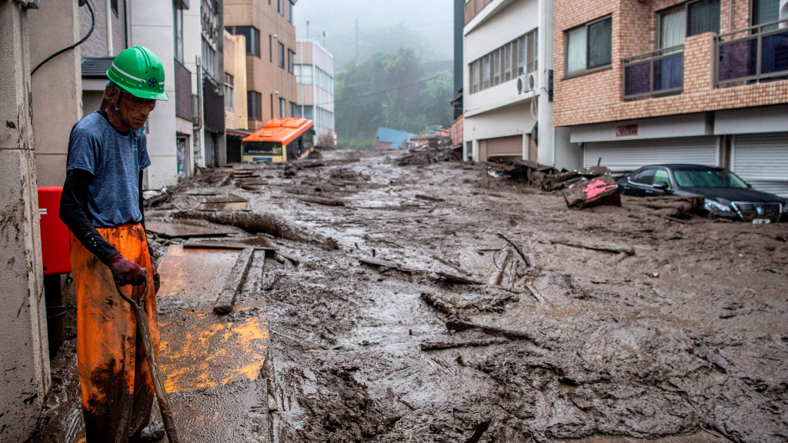

COVID-19
La COVID-19 es la enfermedad causada por el nuevo coronavirus conocido como SARS-CoV-2. La OMS tuvo noticia por primera vez de la existencia de este nuevo virus el 31 de diciembre de 2019, al ser informada de un grupo de casos de «neumonía
vírica» que se habían declarado en Wuhan (República Popular China).
Entre las personas que desarrollan síntomas, la mayoría (alrededor del 80%) se recuperan de la enfermedad sin necesidad de recibir tratamiento hospitalario. Alrededor del 15% desarrollan una enfermedad grave y requieren oxígeno y el 5% llegan
a un estado crítico y precisan cuidados intensivos.
Los síntomas más habituales de la COVID-19 son:
Otros síntomas menos frecuentes y que pueden afectan a algunos pacientes:
Protéjase adoptando algunas precauciones sencillas, como mantener el distanciamiento físico; utilizar mascarilla, especialmente cuando no se pueda mantener el distanciamiento; mantener las habitaciones bien ventiladas; evitar las aglomeraciones y el contacto
estrecho con otras personas; lavarse las manos de forma periódica; y toser cubriéndose con el codo flexionado o con un pañuelo. Consulte las recomendaciones que se den a nivel local en su lugar de residencia y trabajo. ¡Hágalo todo!
GUERRAS
Guerras y conflictos activos en la actualidad
Entre los conflictos bélicos vigentes en 2020 destacan las guerras de Siria y Yemen, el conflicto en Oriente Próximo -agravado por la tensión entre Estados Unidos e Irán-, las complejas y múltiples luchas en el Sahel (Malí, Níger o República Centroafricana)
y la guerra olvidada de Sudán del Sur.

Siria
La guerra en Siria inició hace casi ya una década, en marzo de 2011 y aún hoy es una de las guerras activas en 2020. Desde entonces, se ha cobrado la vida de 380 000 personas, según datos del Observatorio Sirio por los Derechos Humanos;
de ellos, 115 000 son civiles. Pero este conflicto no solo ha dejado a su paso muerte: los ataques y bombardeos de ambos bandos han destruido prácticamente la totalidad el país (infraestructuras, escuelas, hospitales, viviendas,
etc.) y provocado la salida de Siria de casi 12 millones de personas.
Yemen
En 2020 se cumplen cinco años de la guerra civil yemení, una lucha que inició como consecuencia del golpe de Estado de 2014 y que a día de hoy aún enfrenta a las fuerzas separatistas del sur con las leales al gobierno del presidente
Al-Hadi. Este conflicto ha venido a agravar la ya de por sí difícil situación de uno de los países árabes más pobres: entre sus consecuencias más devastadoras, la terrible hambruna que sufre más del 60% de la población y el brote
de cólera que ha dejado a su paso más de 2 000 muertos y afecta a más de medio millón de personas, de las que se estima que el 41% son menores de 15 años.


Oriente Próximo
La eterna lucha entre Israel y Palestina, las guerras de Irak y Afganistán y las graves tensiones entre Estados Unidos e Irán son los principales escenarios de Oriente Próximo, uno de los conflictos bélicos vigentes en 2020 que persiste
con el paso del tiempo y en el que la Unión Europea está intentando mediar, a través de su Alto Representante de Política Exterior, Josep Borrell.
Sudán del Sur
Conocida como la nación más joven del mundo, sufre desde el año 2013 una guerra que parece no tener fin, ni siquiera a pesar de la mediación de la comunidad internacional durante el gobierno de Barack Obama. Tras declararse la independencia
respecto de la República de Sudán en 2011, el presidente y vicepresidente del gobierno del nuevo país entraron en conflicto por tener el control de los numerosos recursos naturales que posee: diamantes, oro, plata, volframio, cobre,
zinc… Una vez más, en un país con tanta riqueza, son los más débiles quienes sufren las consecuencias; y no solo sufren los efectos de la guerra, ya que la población de Sudán del Sur además padece una de las hambrunas más graves
del planeta.

POLITICA
Aunque los analistas no se ponen de acuerdo acerca de la duración y la profundidad del impacto de la crisis global, nadie duda de que genera serios efectos económicos y sociales en América Latina. El artículo aborda un costado que a menudo
se pasa por alto: las consecuencias políticas de la crisis, verificables en dimensiones como la tensión del sistema político, las dificultades para la consolidación del Estado de derecho y los límites a la integración regional. El argumento
central es que la crisis genera desafíos a la gobernabilidad democrática que no pueden enfrentarse solo con propuestas económicas, sino mediante un fortalecimiento de la política.
Breve introducción a la crisis
La crisis global genera consecuencias profundas, graves e incluso devastadoras para muchos países. América Latina es una víctima de esta crisis. Las vulnerabilidades en la región se manifiestan en las dificultades para concertar políticas
que posean un carácter de Estado, es decir, que sean capaces de reflejar el conjunto de voluntades de los diversos actores en el ámbito nacional. Estas dificultades de coordinación se expresan también en el nivel regional, en donde no
se ha logrado construir visiones compartidas para enfrentar la crisis. Más aún, en muchos casos han surgido respuestas que apelan más al proteccionismo que al desarrollo de acciones concertadas entre los países. El ejemplo más evidente
ha sido el caso del G-20 y de las posiciones regionales en la última reunión de la Ronda de Doha.

CATASTROFES NATURALES
Las catastróficas inundaciones en Europa occidental han causado la muerte de más de 120 personas, y cientos más desaparecidas, dijeron las autoridades, mientras continúan los esfuerzos de rescate a gran escala en medio del aumento del
nivel del agua, deslizamientos de tierra y cortes de energía. Imágenes impactantes de la devastación en Alemania y Bélgica mostraron aldeas enteras bajo el agua, con automóviles encajados entre edificios derrumbados y escombros. Los
Países Bajos y Luxemburgo también se han visto afectados por las lluvias extremas. Expertos describieron a los recientes acontecimientos como las lluvias más intensas en un siglo.
"Tsunami de lodo en el centro de Japón"

A inicios de julio, las lluvias torrenciales desencadenaron un potente alud de lodo en Atami, prefectura de Shizuoka, a unos 90 kilómetros al suroeste de Tokio, Japón. El deslizamiento de tierra arrasó unos 130 edificios.